Estrellas Masivas y Supernovas
Evolución Estelar II: cómo viven y mueren las estrellas de alta masa. El ciclo CNO, la fusión por capas hasta el hierro, la energía de enlace nuclear como punto de quiebre, el colapso del núcleo y la explosión de supernova que fabrica —y reparte— los elementos de la tabla periódica.
Una estrella de alta masa () vive rápido y muere de forma espectacular. Quema su hidrógeno mediante una vía de fusión distinta y mucho más eficiente que la del Sol —el ciclo CNO—, avanza fusionando elementos cada vez más pesados por capas, y se detiene en seco al llegar al hierro, el núcleo atómico más estable de la naturaleza. Sin combustible, el núcleo estelar colapsa en una fracción de segundo, el material que cae rebota contra un remanente con densidad de núcleo atómico, y la onda de choque desarma la estrella: una supernova. En esa explosión se liberan ~10⁴⁶ joules y se forjan los elementos más pesados que el hierro. Todo lo que hay en la tabla periódica más allá del hidrógeno y el helio salió de ahí: somos, literalmente, polvo de estrellas.
Repaso: la vida y muerte de las estrellas de baja masa
Dónde quedamos la clase pasada, y el mapa donde ocurre todo: el diagrama HR.
La clase anterior cubrió la evolución de estrellas como el Sol (baja masa). El resumen que hizo la profesora:
- Durante su vida en secuencia principal, la estrella genera energía fusionando hidrógeno en helio en su núcleo.
- Cuando el hidrógeno del núcleo se agota, entra a la fase de gigante roja, con fusión por capas: distintas cáscaras fusionando distintos elementos.
- El elemento de mayor número atómico que alcanza a producir una estrella de baja masa es el carbono. Su núcleo de carbono queda inerte: en principio fusionar carbono liberaría energía, pero una estrella de baja masa nunca alcanza la temperatura y densidad necesarias para hacerlo.
- Sin combustible, las capas externas son expulsadas (las hermosas nebulosas planetarias) y queda el núcleo desnudo: una enana blanca. Los remanentes —el “cementerio estelar”— se ven más adelante en el curso.
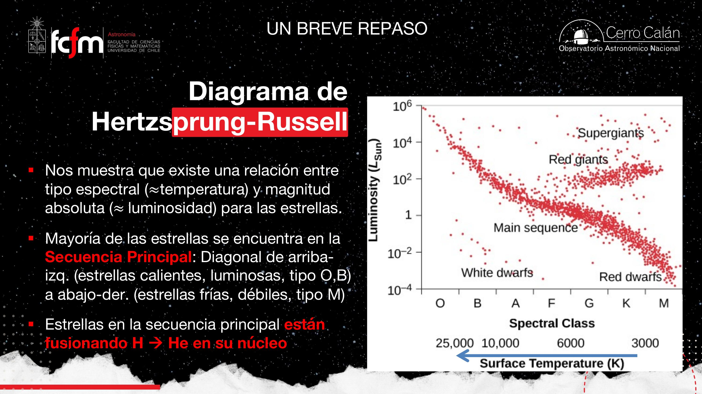
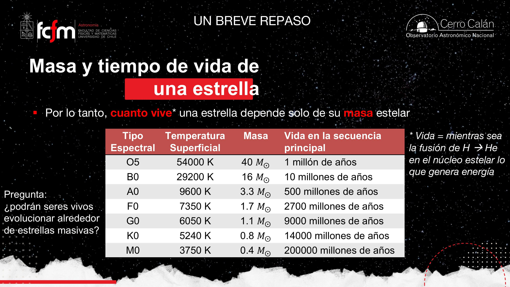
La masa es la plata en la cuenta: si tienes poca, la gastas despacito y te dura todo el mes; si tienes mucha… la quemas en una semana. Las estrellas masivas fusionan su enorme masa a tasas tan altas que su vida en secuencia principal es órdenes de magnitud más corta que la de una estrella de baja masa. Más combustible, pero muchísima más potencia: el estanque se vacía antes.
Con vidas de ~1 millón de años, ¿alcanza a evolucionar vida alrededor de una estrella masiva? La vida parece requerir estabilidad por escalas largas. Y un segundo problema, tema de investigación actual: si es que alcanzan siquiera a formar planetas. Ambas son preguntas abiertas, no contenido resuelto.
Estrellas de alta masa: vivir rápido, morir joven
La frontera difusa de las ~4 masas solares, y una evolución acelerada y dramática.
La separación entre “baja” y “alta” masa se pone, como referencia, en . Ojo con la advertencia de la profesora: es un gradiente, no un interruptor. No es que “exactamente en 4 pasa esto y en 3,9 no”; es la zona donde el comportamiento cambia de régimen.
Las etapas iniciales son similares a las de una estrella de baja masa, pero comprimidas en el tiempo:
- Una corta vida en secuencia principal fusionando H → He en el núcleo (millones de años para decenas de M☉, versus ~10¹⁰ años para baja masa).
- Al agotarse el H central: fusión de H → He en una cáscara alrededor de un núcleo inerte de helio.
- Como la estrella tiene mucha más masa, puede comprimir mucho más ese núcleo de helio, que enciende la fusión He → C de forma gradual — sin el flash de helio de las estrellas de baja masa.
- Evoluciona hasta tener un núcleo de C y O (como el Sol lo hará), pero mucho más rápido, y no se detiene ahí.
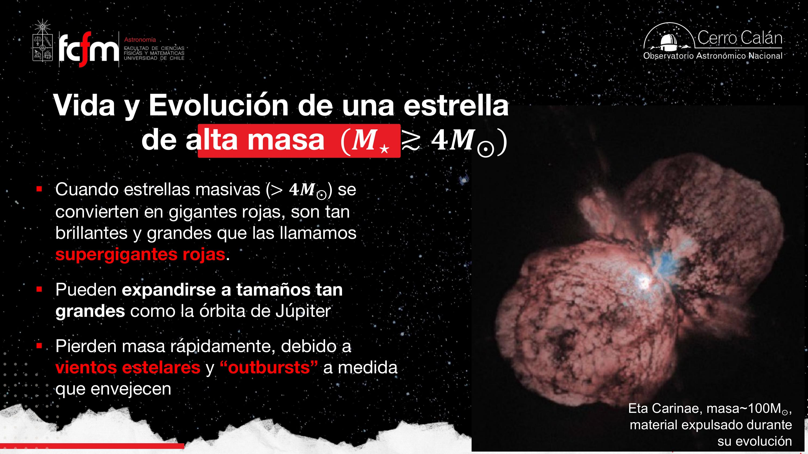
El balance entre gravedad y presión se mantiene siempre mientras haya temperatura suficiente, y la temperatura proviene de la fusión. Lo que se rompe al final no es el balance “per se”: se acaba el combustible, se pierde temperatura y por lo tanto presión, y ahí empiezan los problemas. Mientras la estrella tenga qué fusionar, todo se mantiene “parejito”.
Piensa en la estrella como un sistema de control con lazo de realimentación negativa: si el núcleo se comprime, sube la temperatura, sube la tasa de fusión, sube la presión y el sistema se re-expande. El “setpoint” lo fija el balance energético. La muerte estelar es la pérdida del actuador (la fuente de energía), no del lazo: sin potencia disponible, ningún controlador sostiene la planta.
El ciclo CNO: fusionar hidrógeno con catalizadores
La misma reacción neta que la cadena protón–protón, por una vía mucho más rápida.
En el primer módulo se estudió la cadena protón–protón (p–p): los protones se van juntando de a pares, formando isótopos intermedios, hasta armar un núcleo de helio (no chocan 4 protones a la vez: la probabilidad de eso es ínfima incluso a esas densidades). En estrellas de alta masa la cadena p–p también existe y genera energía, pero la que domina es otra: el ciclo CNO.
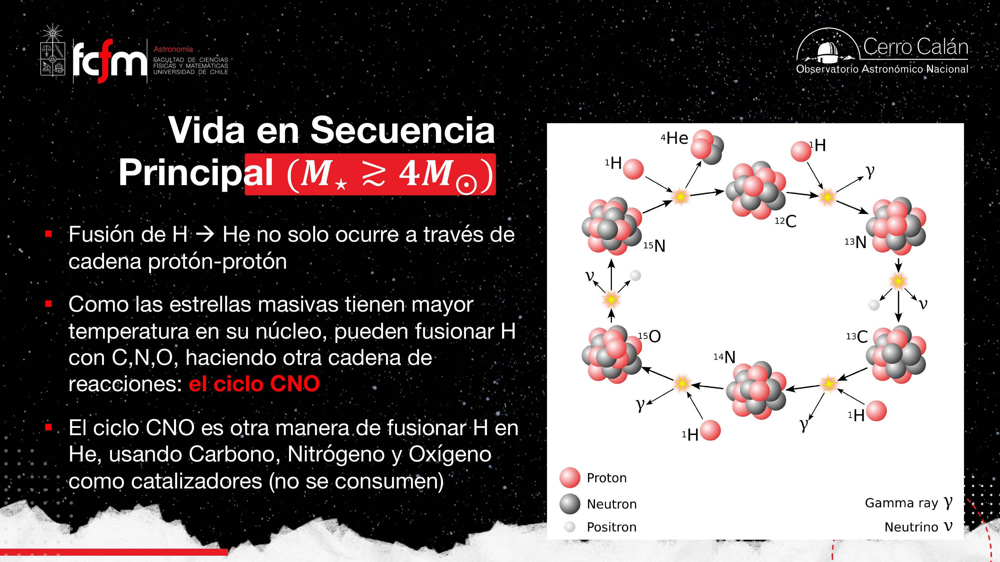
La vuelta completa del ciclo
Partiendo de un núcleo de carbono-12 (basta una traza, porque se recupera al final):
- — fusión con un protón; se libera un fotón gamma.
- — el ¹³N es inestable: decae emitiendo un positrón y un neutrino.
- — otro protón (hidrógeno es lo que sobra).
- — otro decaimiento con positrón y neutrino.
- — se libera el núcleo de helio y se recupera el carbono inicial.
Por temperatura y densidad. Para que un protón “se meta” en un núcleo de carbono debe vencer una repulsión eléctrica mayor que entre dos protones, y eso requiere altísimas velocidades — es decir, altísima temperatura. En estrellas de alta masa la tasa del ciclo CNO se dispara y supera con creces a la p–p; en estrellas de baja masa el CNO también opera, pero a una tasa órdenes de magnitud menor (por cada millón de fotones de la cadena p–p, unos pocos del CNO). “Dominar” significa ambas cosas a la vez: más fusiones por segundo y más energía generada.
Al calcular la generación de energía de una estrella muy masiva solo con la cadena p–p, el cálculo no da: no alcanza para explicar su luminosidad. El descubrimiento del ciclo CNO (trabajo conjunto de astrofísicos y físicos nucleares) resolvió el problema: con las trazas medidas de C, N y O, las tasas calzan. Nota de verificación: la transcripción dice “años 60”, pero el ciclo CNO fue propuesto por Hans Bethe y Carl F. von Weizsäcker a fines de los años 1930 (material externo, corregido).
¿De dónde salió el carbono? Las primeras estrellas
Pregunta de un estudiante que la profesora celebró: si el ciclo necesita carbono, ¿de dónde proviene? La composición típica es ~70–75% hidrógeno, ~25% helio y trazas del resto — y esas trazas bastan porque el catalizador no se consume. Pero ese carbono no estaba en el Big Bang: proviene de generaciones estelares anteriores. Las primeras estrellas del universo (Población III) no tenían C, N ni O disponibles, así que solo podían usar la cadena p–p, generando energía a otras tasas — un tema abierto de investigación, porque igual tenían luminosidades gigantes.
El ¹²C funciona como un worker de un pool de recursos: procesa 4 “trabajos” (protones), emite resultados (He, γ, ν) y vuelve al pool intacto para la siguiente iteración. Por eso el throughput no depende de cuánto carbono hay (basta un pool chico) sino de la tasa de llegada y la energía de los trabajos — la temperatura. Y el arranque en frío (Población III, pool vacío) obliga a usar el algoritmo lento (p–p).
En clase surgió la duda con el ¹²C. El superíndice (12) es el número másico A: protones + neutrones (nucleones). El número atómico Z es solo el número de protones (6 para el carbono). En fusión conviene contar nucleones, por eso se usa A. ¹²C es estable; ¹³N es un isótopo inestable que decae. Y de paso: los neutrinos del CNO son de distinto tipo/energía que los de la cadena p–p — los neutrinos solares fueron evidencia del ciclo p–p en el Sol, y en principio la tasa de neutrinos distingue qué ciclo domina.
Supergigantes rojas: fusión por capas hasta el hierro
Con 600 millones de kelvin se puede seguir subiendo por la tabla periódica… hasta cierto punto.
El Sol alcanza ~15 millones de K en su interior: suficiente para H → He y, más comprimido, para llegar al carbono. Una estrella masiva alcanza ~600 millones de K en las etapas avanzadas y puede seguir la escalera de fusiones: , y . El resultado es una estructura de cebolla:
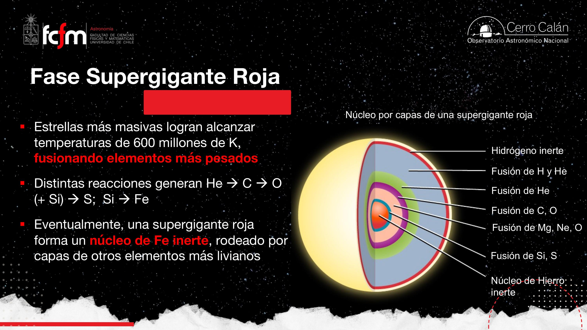
El hierro es el basurero de la secuencia: ahí se “deposita el desecho”, porque fusionar hierro no genera energía — la requiere. El núcleo de Fe queda inerte, rodeado de capas que todavía fusionan elementos más livianos. ¿Por qué justo el hierro? Eso necesita la sección siguiente.
La supergigante mide ~5 UA de radio; su núcleo activo, apenas del tamaño de una estrella normal. En Eta Carinae no medimos ese radio directamente (la estrella está escondida dentro de su nube de material eyectado), pero en otras supergigantes sí se ha podido.
Energía de enlace nuclear: el muro del hierro
Por qué la fusión libera energía… hasta el ⁵⁶Fe, y después la exige.
La energía de enlace nuclear es la energía necesaria para descomponer un núcleo atómico en sus protones y neutrones separados. El dato clave es una asimetría de masas: los nucleones por separado pesan más que el núcleo armado. Esa diferencia de masa es la energía de enlace:
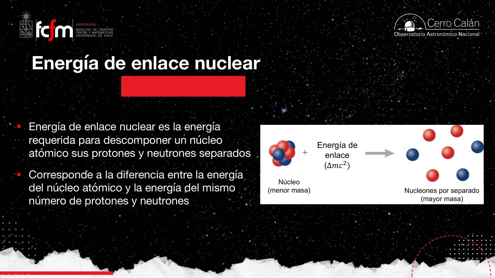
Si graficamos la energía de enlace por nucleón en función del número de nucleones A, la curva sube, alcanza un máximo en el hierro (⁵⁶Fe) y luego baja suavemente:
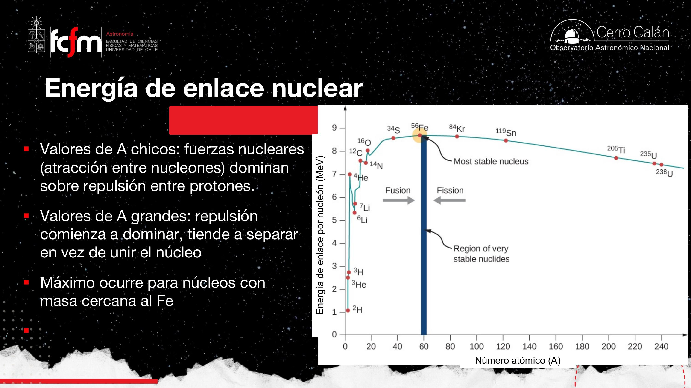
La fuerza nuclear fuerte une nucleones, pero solo a distancias del porte de un núcleo atómico. En núcleos chicos, todos los nucleones se “sienten” y están bien amarrados. A medida que el núcleo crece, los nucleones más externos quedan lejos del resto: la fuerza fuerte se les diluye mientras la repulsión electromagnética entre protones (que es de largo alcance) sigue sumando. El punto óptimo de ese compromiso — “donde estás mejor armado” — es el hierro.
- Fusión con A < 56 (H, He, C, O, Si…): proceso exotérmico, libera energía. Es lo que alimenta a las estrellas.
- Fisión con A > 56 (uranio, etc.): también exotérmico — así generamos energía por fisión aquí en la Tierra.
- Fusionar hierro (o fisionarlo): proceso que requiere energía. Se puede hacer, pero hay que pagarla.
Para la estrella esto es una pésima noticia: llega al hierro y se queda sin combustible — no hay ninguna reacción disponible en el núcleo que siga liberando energía.
La curva de enlace por nucleón es una función objetivo con un máximo global en A≈56. La fusión “sube el gradiente” desde la izquierda; la fisión, desde la derecha. El hierro es el punto donde ambos gradientes se anulan: cualquier movimiento desde ahí cuesta energía. Una estrella es un optimizador que se detiene, inevitablemente, en el óptimo.
Colapso y rebote: la explosión de supernova
Se le cae el piso a la estrella — y el material rebota contra un núcleo con densidad atómica.
El núcleo de hierro no genera energía; se enfría, pierde presión, y el plasma “no se la puede” con el peso de todo el material de encima. La secuencia de la catástrofe:
- Fusión por capas, núcleo de Fe creciente. Las cáscaras siguen fusionando (y depositando más hierro), pero el centro está muerto energéticamente.
- Colapso. Cuando la gravedad supera la presión, el núcleo colapsa sobre sí mismo. En su parte más interna, la compresión se detiene por la presión degenerada de neutrones, con densidades tan altas como las de un núcleo atómico: es como un “gran átomo” de ~1 masa solar, con un número de nucleones de 10 elevado a un número enorme.
- Rebote. A las capas superiores “se les cayó el piso”: caen en caída libre… y se estrellan contra esa superficie incompresible. El material rebota y genera una onda de choque — un frente de presión que se propaga hacia afuera.
- Explosión. Ondas de choque y neutrinos propelen el material hacia afuera de manera heterogénea. Las partes externas de la estrella son eyectadas; queda solo un remanente central.
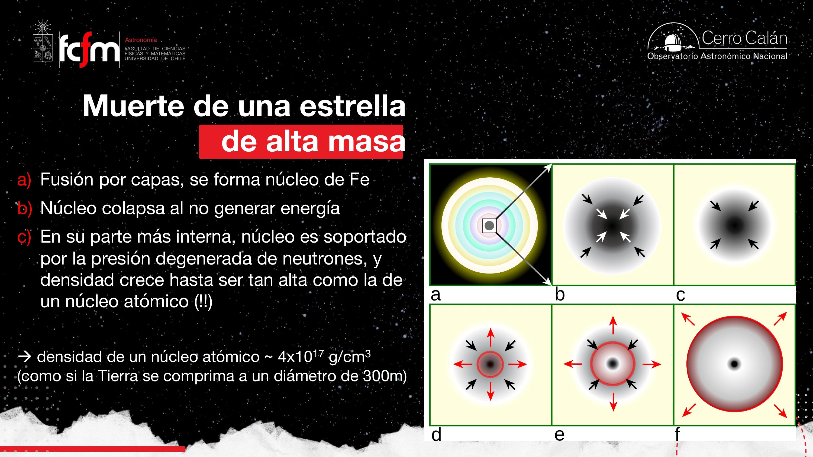
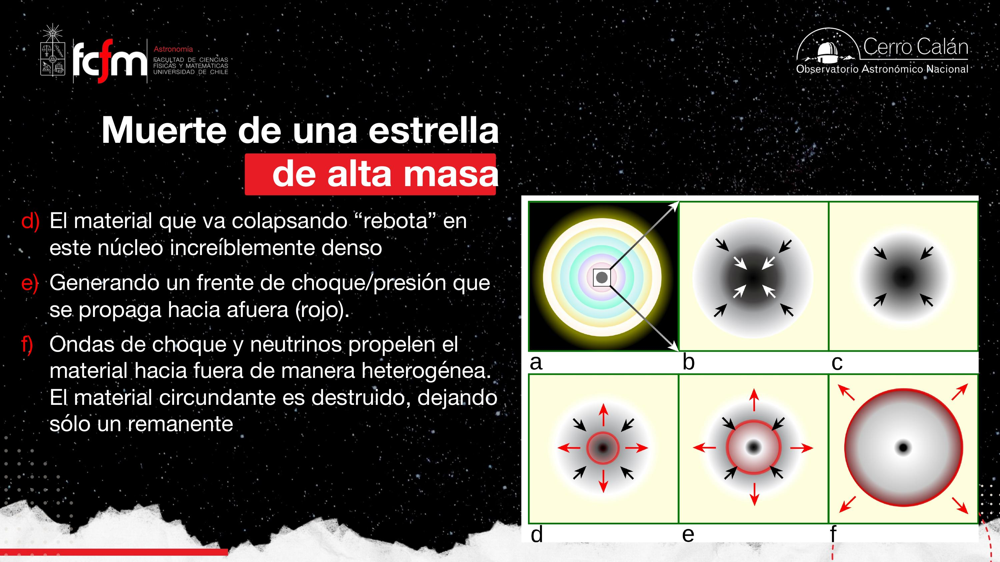
El principio de exclusión: a las partículas no les gusta ocupar el mismo estado que otras. Si la sala está vacía, los estudiantes nuevos se sientan y no pasa nada; si todos los asientos están ocupados, nadie acepta que se le sienten encima — el conjunto ejerce una presión contra nuevos ocupantes. Esa es la presión degenerada (de electrones en enanas blancas, de neutrones aquí). El núcleo colapsado es la sala llena: tiene un tamaño físico definido, y contra esa “superficie” rebota todo lo que sigue cayendo.
En la onda de choque de la eyección sí se está entregando energía al material: ahí puede ocurrir la fusión de elementos más pesados que el hierro (lo que no ocurre al interior de ninguna estrella). Además, la explosión libera al espacio todos los elementos que la estrella había fabricado por capas — ya no solo hidrógeno y helio — enriqueciendo el medio interestelar para las siguientes generaciones de estrellas… y planetas.
Energética y escalas de tiempo
10⁴⁶ joules en horas: 100 vidas enteras del Sol, liberadas casi instantáneamente.
Los tiempos: un desarme casi instantáneo
- Contracción del núcleo de Fe hasta densidad nuclear: ~0,1 segundos.
- Colapso (caída libre) del resto del núcleo estelar: ~1 segundo.
- Transporte de la onda de choque a través de la estrella entera (¡que mide ~5 UA!): ~horas.
Una estrella que vivió un millón de años se desarma en una hora. Comparado con su vida, la supernova es un instante. Y de la estimación al vuelo hecha en clase: recorrer ~5 UA en horas implica velocidades del orden de una fracción apreciable (~1/10–1/20) de la velocidad de la luz.
La energía: la gravedad paga la cuenta
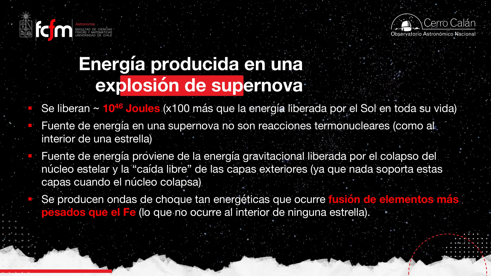
La curva de luz
La profesora la dibujó en la pizarra: en un gráfico (logarítmico) de luminosidad versus tiempo, la supernova se pega un salto casi instantáneo de brillo, y luego la energía se demora en radiarse, enfriarse y mezclarse con el medio interestelar: la caída es larga, de meses. La supernova se mantiene brillante ~semanas, lo que permite ir a sacarle espectros. Como el salto es gigantesco, las supernovas sirven de faros para ver el universo lejano (a redshift altísimo) — de hecho se usaron para el Nobel de la expansión acelerada del universo. Capturar la subida de la curva es difícil: no estamos monitoreando todas las galaxias todo el tiempo.
Buscar supernovas es un problema de detección de anomalías en streaming: comparas imágenes “antes/después” de millones de galaxias buscando un punto nuevo con caída exponencial de brillo. Las búsquedas sistemáticas modernas (surveys) automatizan exactamente ese diff — el mismo patrón que un sistema de monitoreo detectando un spike en un dashboard con escala log.
La fábrica de los elementos vitales
Una tabla periódica que se llena con evolución estelar: somos polvo de estrellas.
El Big Bang fabricó hidrógeno, helio y un poco de litio. Y nada más. Pero la vida —y la Tierra— necesita muchos otros elementos. Las estrellas han fabricado todo el resto: por eso la profesora trajo su tabla periódica favorita, la “de astrónomos”, que colorea cada elemento según dónde se creó.
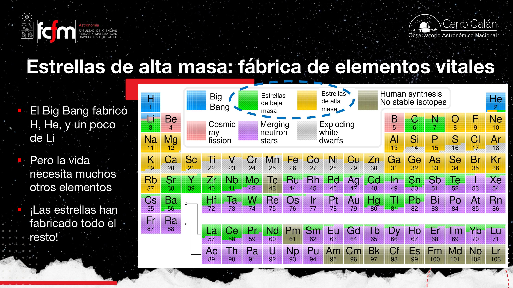
¿Y ese pedacito atribuido a “estrellas de baja masa” en elementos pesados, si solo llegan al carbono? La clave son los sistemas binarios (la mayoría de las estrellas no está sola como el Sol). Si una enana blanca orbita otra estrella que se expande, puede robarle masa. Existe un límite fundamental impuesto por la presión degenerada de electrones — el límite de Chandrasekhar — y si la enana blanca “comilona” lo sobrepasa, colapsa y explota como otro tipo de supernova (y una nova es el caso en que solo roba material y quema lo depositado). Todo esto se ve en detalle en la clase del cementerio estelar.
El carbono de nuestro cuerpo, el nitrógeno del aire, el hierro de la sangre: fueron formados en generaciones estelares anteriores y esparcidos por supernovas al medio interestelar, donde terminaron en la nube que formó al Sol y a la Tierra. “Somos polvo de estrellas” no es poesía: es trazabilidad de materiales.
¿Qué evidencia tenemos de la nucleosíntesis?
Tres líneas de evidencia: metalicidades, abundancias pares/impares y supernovas observadas.
1. Estrellas viejas vs estrellas jóvenes
Una estrella vieja hoy es necesariamente de baja masa (las masivas de esa época ya murieron). Midiendo por espectroscopía su metalicidad — la abundancia de elementos más pesados respecto al hidrógeno — se encuentra que las estrellas viejas tienen metalicidades mucho más bajas que las jóvenes. Las jóvenes nacieron de material ya procesado por generaciones anteriores; las viejas, de material aún “limpio”. Exactamente lo que predice la nucleosíntesis estelar.
2. Pares vs impares
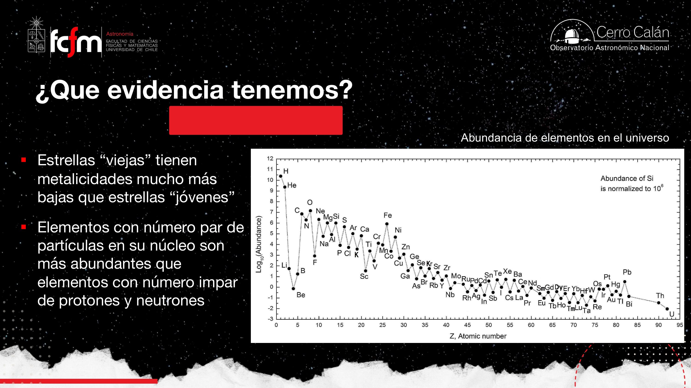
3. Supernovas observadas: de 1604 al James Webb
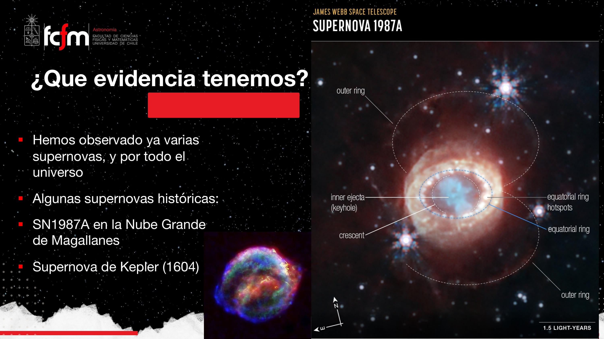
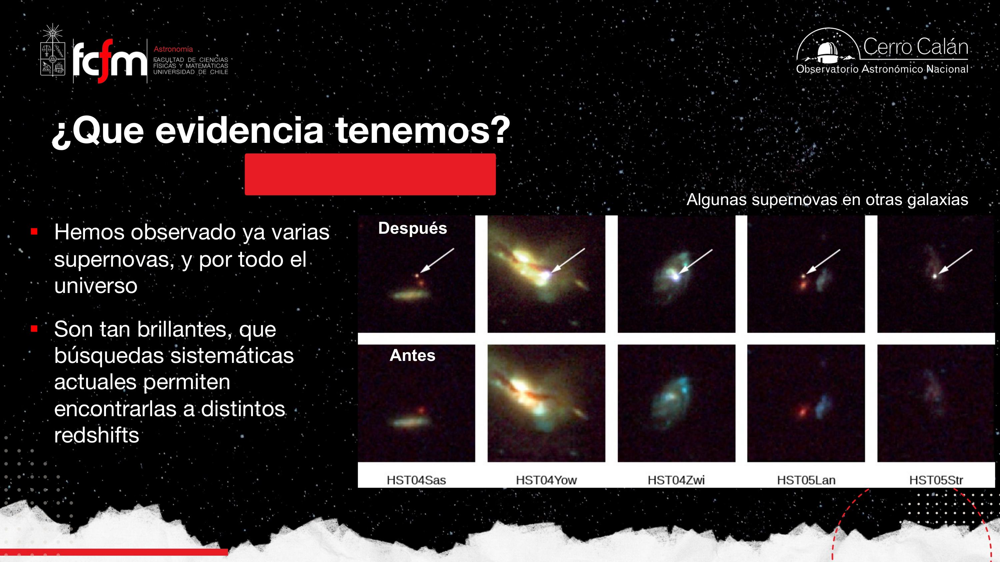
Detectar neutrinos es dificilísimo: casi no interactúan con la materia — “atraviesan todo”. Los primeros experimentos usaron moléculas (de cloro) que interactúan a una tasa un poco mayor. La tasa medida para el Sol no calzaba con la esperada… hasta que se descubrió que hay tres tipos de neutrino (y que tienen una pequeñísima masa, viajando a casi la velocidad de la luz). En una supernova, la fusión de elementos pesados en un instante libera un estallido de neutrinos — a una tasa gigantesca comparada con el goteo de toda una vida estelar. SN 1987A es el caso emblemático de neutrinos detectados.
Conceptos clave
Tabla de repaso rápido.
| Concepto | Qué es / valor | Por qué importa |
|---|---|---|
| Alta masa | (frontera difusa) | Cambia el régimen: CNO, supergigante, supernova |
| Vida en secuencia principal | ~10⁶ años (40 M☉) vs ~10¹⁰ años (1 M☉) | Más masa ⇒ tasas de fusión altísimas ⇒ vida cortísima |
| Ciclo CNO | 4 ¹H → ⁴He usando C, N, O como catalizadores | Vía dominante de fusión de H en estrellas masivas |
| Catalizador | Participa en la reacción pero no se consume | Bastan trazas de C, N, O para sostener el ciclo |
| Población III | Primeras estrellas, sin metales | Sin C no hay CNO: solo cadena p–p; tema abierto |
| Supergigante roja | Radio de hasta ~5 UA (órbita de Júpiter) | Fase evolucionada de estrellas masivas; pierde masa por vientos y outbursts |
| Fusión por capas | H→He / He→C,O / …Si→Fe, ~600 millones K | Estructura de cebolla; el Fe se acumula al centro, inerte |
| Energía de enlace | ; máximo por nucleón en ⁵⁶Fe | Fusionar Fe requiere energía: fin del combustible |
| Presión degenerada de neutrones | Principio de exclusión: “la sala llena” | Detiene el colapso; da la superficie contra la que rebota el material |
| Supernova (colapso de núcleo) | Colapso ~0,1–1 s; choque recorre la estrella en ~horas | Desarma la estrella; fuente: energía gravitacional, no fusión |
| Energía liberada | ~10⁴⁶ J ≈ 100 vidas completas del Sol | Faros para ver el universo lejano (Nobel de la expansión) |
| Nucleosíntesis | Elementos > Fe se forjan en la explosión | Enriquece el medio interestelar: somos polvo de estrellas |
| Metalicidad | Abundancia de elementos pesados vs H | Viejas: baja; jóvenes: alta ⇒ evidencia de nucleosíntesis |
| Patrón par/impar | Núcleos pares más abundantes que impares | La fusión avanza “de a dos”: firma de origen estelar |
| SN 1987A / Kepler 1604 | Supernovas cercanas con remanente observable | Evidencia directa; JWST muestra la expansión ~40 años después |
Exámenes de práctica
10 exámenes de 5 preguntas (3 de alternativas autocorregibles + 2 de respuesta escrita).